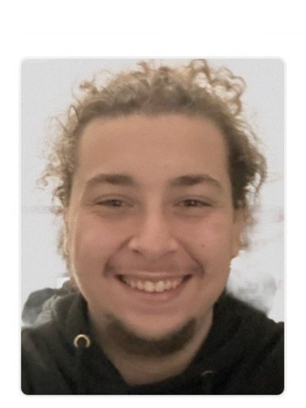
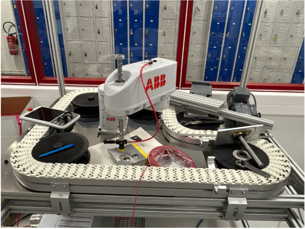
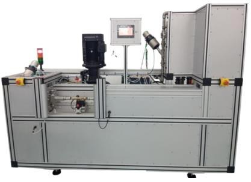

Étudiant en 3e année de BUT GEII, parcours Automatismes et Informatique Industrielle. Je conçois, programme et fiabilise les systèmes qui pilotent l'industrie — du capteur à la mise en service.

Rigoureux, curieux, autonome — j'aime comprendre les systèmes en profondeur avant de les améliorer.
Étudiant en 3e année de BUT GEII à l'IUT de Brest-Morlaix, je me spécialise en Automatismes et Informatique Industrielle.
Mon parcours, à la croisée de l'électronique, de la programmation et de la mécanique industrielle, m'a appris à intervenir sur toute la chaîne : du choix des composants à la mise en service, en passant par la programmation d'automates, la robotique, la sécurité machine et la maintenance.
Je suis actuellement en alternance chez Sagemcom MEI, où je participe à la fabrication et l'optimisation de prototypes de compteurs d'eau intelligents — un terrain idéal pour confronter la théorie à la réalité industrielle.
Ce que je cherche : continuer à monter en compétence sur des projets concrets, en équipe, avec l'envie d'apporter des solutions qui tiennent la route — du schéma au câblage, du code au produit fini.
De la classe de Terminale à l'automatisme industriel — un parcours pensé pour mettre les mains dans le concret.
IUT Brest-Morlaix · Parcours AII
Spécialisation Automatismes et Informatique Industrielle. Approfondissement de la programmation d'automates (Schneider, Siemens), de la robotique industrielle (FANUC, ABB) et de la sécurité machine.
IUT Brest-Morlaix
Acquisition des fondamentaux du génie électrique : électronique analogique et numérique, automatique, capteurs, informatique industrielle, électrotechnique et conception de systèmes.
[Lycée — Ville · à compléter]
Obtention du baccalauréat — première étape vers une orientation choisie en génie électrique et informatique industrielle.
Les 4 axes du référentiel BUT GEII — Concevoir, Vérifier, Maintenir, Implanter — déclinés avec les outils que j'utilise au quotidien.
Spécification fonctionnelle, choix des composants (capteurs, contacteurs, protections), conception d'architectures matérielles et logicielles, rédaction et révision de schémas électriques.
Mesures électriques, contrôles de validation à l'aide des instruments adaptés, lecture et vérification de schémas et plans de câblage avant mise sous tension.
Maintenance préventive et corrective sur lignes de production, diagnostic de pannes, optimisations matérielles et logicielles pour améliorer la performance des systèmes en service.
Câblage et assemblage d'armoires électriques, programmation d'automates (Schneider, Siemens), programmation de robots industriels (ABB, FANUC), mise en service et sécurisation machine selon ISO 13849-1.
Projets académiques et industriels où j'ai pu mettre en pratique l'ensemble de la chaîne — de la conception à la mise en service.

Refonte et sécurisation d'une cellule robotique de tri équipée d'un robot ABB SCARA et d'un système de vision Keyence. Programmation des trajectoires pick-and-place, calibration du système de vision XG-035C pour la reconnaissance et le tri par catégorie, conception et mise en place du dispositif de sécurité (barrières immatérielles, relais de sécurité) dans le respect de la norme ISO 13849-1.
En savoir plus →Simulation complète d'un îlot automatisé de palettisation sur cellule éducative FANUC LR Mate 200iD. Programmation des séquences pick-and-place via ROBOGUIDE : prise de boîtes sur convoyeur (gestion des E/S DI/DO, ventouse préhenseuse), présentation face au portique d'impression de date (changement d'UFrame), puis palettisation en couches croisées dans la caisse. Calcul des paramètres payload (inerties, centres de gravité), définition des UTool et UFrame, conception de la logique de boucle avec registres pour la gestion automatique des couches paires/impaires.
En savoir plus →
Mise en service et validation d'un banc industriel destiné à vérifier la calibration de capteurs de pression intégrés à des compteurs d'eau intelligents. Tests de répétabilité, rédaction du rapport de validation, modifications de l'IHM (multilingue, indicateurs), simplification du programme automate (LD → Grafcet) et formation des opérateurs.
L'alternance, c'est là que tout se confronte au réel. Voici l'expérience qui structure mon parcours pro.
Sagemcom MEI
Co-gestion de la fabrication de prototypes de compteurs d'eau intelligents. Coordination avec les équipes d'ingénierie de Paris et Tunis sur les évolutions de production et la résolution d'incidents. Maintenance préventive et corrective, livraison d'optimisations matérielles et logicielles pour améliorer la performance de la ligne.
Niveaux B1V / B2V / BR
Formation à l'intervention en basse tension : travaux d'ordre électrique, opérations de mesurage et essais, dépannage et consignation. Indispensable pour intervenir en toute sécurité sur des installations industrielles sous tension ou hors tension.
Prévention et Secours Civiques niveau 1
Formation aux gestes qui sauvent : protéger, alerter, secourir. Une compétence transversale, particulièrement utile en environnement industriel où les risques (électriques, mécaniques, chimiques) sont présents au quotidien.
Cinéma, livres, sport et regard tourné vers les étoiles — ce qui me nourrit en dehors de la technique.